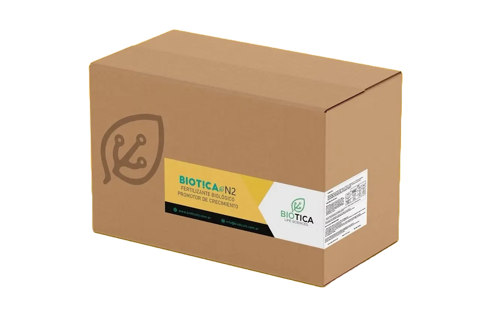
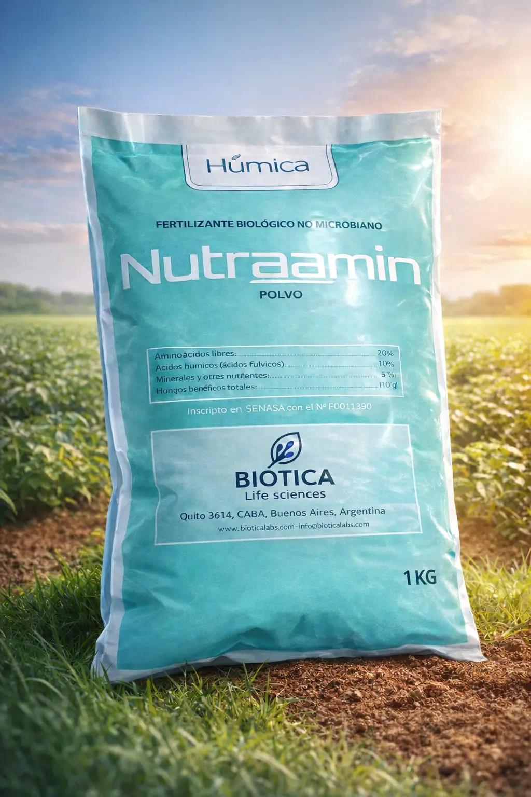

Novedades
BIOTICA N2 mejora la nutrición y crecimiento con fijación biológica de nitrógeno
Actualización técnica
Ver detalle arrow_forwardDesarrollamos soluciones científicas que potencian el rendimiento de tus cultivos respetando el equilibrio del ecosistema.
Conocé nuestra nueva línea de productos formulados con consorcios microbianos de alta eficiencia.

Optimización de la fijación biológica de nutrientes y del desarrollo radicular desde el inicio.
Ver más chevron_right
Potencian el metabolismo vegetal para mejorar la respuesta ante estrés y maximizar el rendimiento.
Ver más chevron_right
Harnessing the power of nature to restore soil vitality and carbon sequestration.
Ver más chevron_rightInvestigamos, formulamos y validamos soluciones en laboratorio, invernadero y campo para asegurar resultados consistentes y medibles.



Actualización técnica
Ver detalle arrow_forward
Actualización técnica
Ver detalle arrow_forward
Disponible ahora
Ver detalle arrow_forward
Línea científica
Ver detalle arrow_forwardReciba novedades técnicas y lanzamientos.
Al suscribirse, acepta nuestra Política de Privacidad y Términos de Uso.